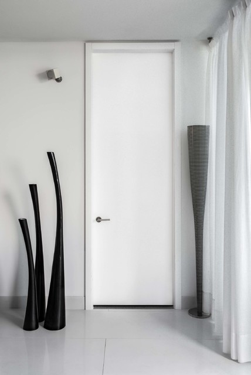

Doors & Entry Systems
WERKAR delivers clean-lined door solutions for contemporary entrance halls and interiors. Dimensions, opening direction and finishes are considered with the space as a whole. Durable hardware and careful installation complete the arrival experience.
Request a Quote →